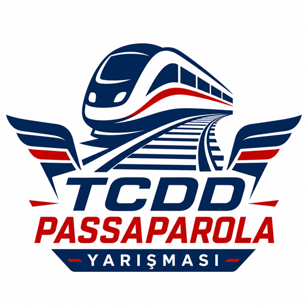

TCDD PASSAPAROLA YARIŞMASI
Hakkımızda
TCDD Passaparola Yarışması; demiryolu eğitimiyle ilgili bilgileri eğlenceli, etkileşimli ve erişilebilir bir yarışma deneyimiyle sunmak amacıyla geliştirilmiştir.
İletişim
E-posta: efeto0025@gmail.com
Telefon: +90 541 199 3340
Kullanılan Teknolojiler
- HTML5
- CSS3
- JavaScript
- PWA
- Firebase